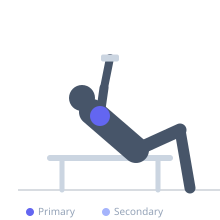
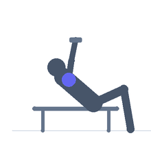

Exercise guide / Incline Bench Lateral Raise (Chest Down)
Incline Bench Lateral Raise (Chest Down)
The incline bench lateral raise performed face-down (prone) on an incline bench trains the lateral deltoid with gravity acting directly on the arm through the full range of motion without any torso lean compensation. The prone position eliminates all momentum from torso swing, isolates the medial deltoid more completely than standing versions, and also trains the posterior deltoid through the horizontal abduction component of the exercise.
Primary muscles
deltoid lateral
Secondary muscles
deltoid posterior
Equipment
Standard Barbell
Dumbbell (Fixed)


Starting position
- Lie face-down on an incline bench (30-45 degrees). Hold a dumbbell in each hand hanging below the bench. Arms relaxed, perpendicular to the floor.
Setup
- Set the bench high enough that the arms can hang freely. Light weight only.
Steps
- Step 1: Begin hanging, arms perpendicular to floor.
- Step 2: Raise both arms out laterally to shoulder height (horizontal).
- Step 3: Hold 1 second.
- Step 4: Lower under control back to hanging.
- Step 5: Repeat.
Coaching cues
- Lead with the elbows — slight bend
- Pinkies up at the top
- Own the descent — slow 3-second lower
Breathing
- Exhale raising. Inhale lowering.
Range of motion
- Full hang to arms horizontal at shoulder height.
Tempo
- 2-1-3-0
Common mistakes
- Raising the arms too far beyond horizontal — shoulder height is the target
- Using too heavy a load — the hanging start position is fully gravity-loaded
Safety
- Very light loads — the prone position with hanging arms creates substantial lever arm
- Avoid if shoulder impingement is present
Training
- hypertrophy: 12–20 reps
- hypertrophy: 3–4 sets
- Rest: {'hypertrophy': 60}